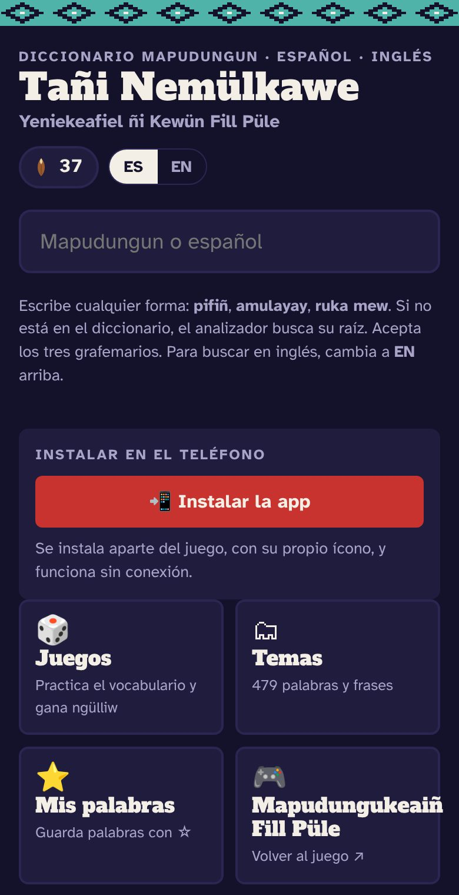

Diccionario mapudungun · español · inglésMapudungun · Spanish · English dictionary
Tañi Nemülkawe Yeniekeafiel ñi Kewün Fill Püle
«Mi diccionario: para llevar mi lengua a todas partes»“My dictionary: to carry my language everywhere”
Un diccionario gratuito para buscar palabras en mapudungun, español e inglés, en cualquiera de los tres grafemarios. Si escribes una forma conjugada, como amulayay o kimlafiñ, un analizador la divide en raíz y sufijos y te lleva a la raíz. Funciona en el teléfono y sin conexión.A free dictionary for looking up words in Mapudungun, Spanish and English, in any of the three grafemarios. Type an inflected form such as amulayay or kimlafiñ and a parser splits it into root and suffixes and takes you to the root. It runs on your phone and works offline.
479entradas del núcleocore entries
6.991entradas de AugustaAugusta entries
6juegosgames
3grafemarios
